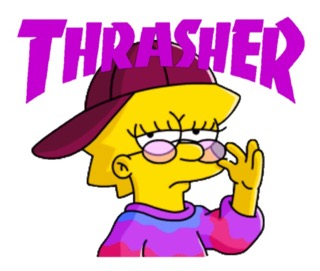
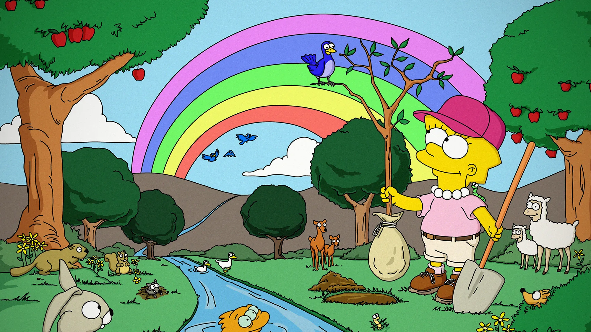

Damn it feels good to be a gangsta.
Lisa Marie Simpson, boss-ass 8 year old fighting against misongyny, is one of the greatest feminist TV characters of all time.
Lisa's Characteristics
- Activist.
- Musician.
- Vegetarian.
- 159 IQ
Lisa's Lessons
Even though she's only 8 years old in the series, Lisa Simpson has been laying down some pretty wise lessons for audiences across the globe. Click on the link below to see Lisa's lessons in action.
